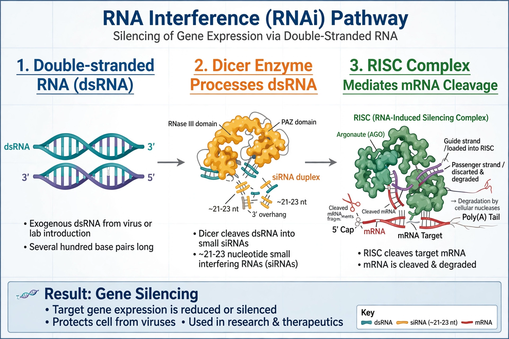

| Gene silencing | |
|---|---|
| Types | Transcriptional (TGS); post-transcriptional (PTGS) |
| Mechanisms | DNA methylation; histone modification; RNA interference (siRNA, miRNA, piRNA) |
| Key enzymes | Dicer, Argonaute (RISC) |
| Applications | Research knockdowns; RNAi therapeutics (e.g. patisiran) |

Gene silencing is the regulation of gene expression in a cell to prevent the expression of a certain gene — the switching "off" of a gene by mechanisms other than a change to its DNA sequence. Silencing can occur during either transcription or translation and is a natural part of development, defence against viruses and transposons, and the control of gene expression in eukaryotes.
Transcriptional gene silencing (TGS) prevents a gene from being transcribed at all. Mechanisms include DNA methylation of promoter regions, repressive histone modifications that compact chromatin into heterochromatin, and genomic imprinting — the parent-of-origin silencing of one allele. In plants, RNA-directed DNA methylation uses small RNAs to guide methylation to matching DNA sequences.
Post-transcriptional gene silencing (PTGS) destroys or blocks the mRNA of a gene after transcription. Its best-known form is RNA interference (RNAi), discovered in C. elegans by Andrew Fire and Craig Mello: double-stranded RNA is cut by the enzyme Dicer into small interfering RNAs (siRNAs), which load into the RISC complex containing an Argonaute protein and direct the cleavage of complementary mRNA. Endogenous microRNAs (miRNAs) use the same machinery to fine-tune gene expression, while piRNAs silence transposons in animal germlines.
Gene silencing is a routine laboratory tool for studying gene function by "knocking down" expression, and has entered medicine: the siRNA drug patisiran (Onpattro), approved in 2018, was the first RNAi therapeutic, silencing the transthyretin gene in hereditary amyloidosis. Antisense oligonucleotides and CRISPR-based repression (CRISPRi) achieve related effects.